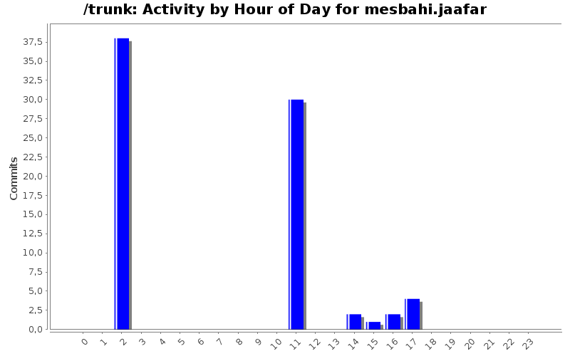
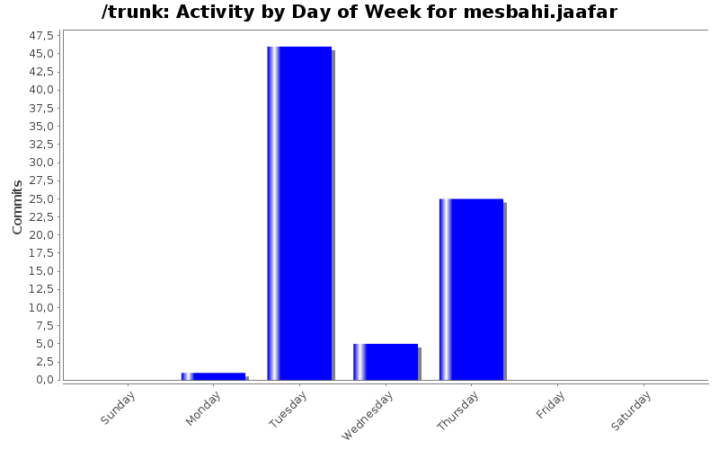
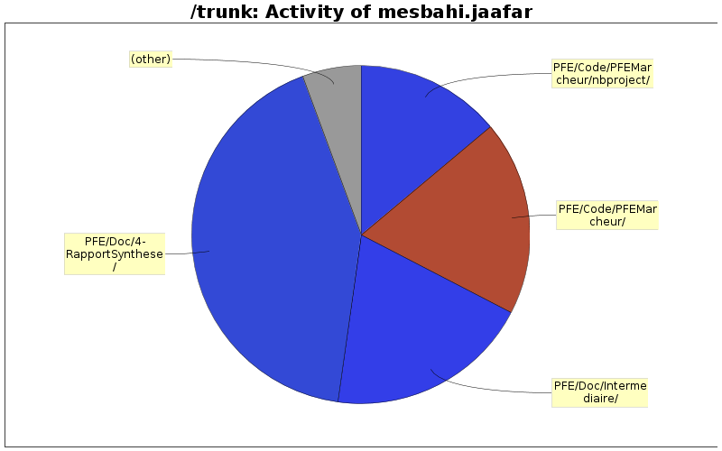

| Directory | Changes | Lines of Code | Lines per Change |
|---|---|---|---|
| Totals | 77 (100.0%) | 4365 (100.0%) | 56.6 |
| PFE/Doc/4-RapportSynthese/ | 5 (6.5%) | 1842 (42.2%) | 368.4 |
| PFE/Doc/Intermediaire/ | 3 (3.9%) | 853 (19.5%) | 284.3 |
| PFE/Code/PFEMarcheur/ | 13 (16.9%) | 816 (18.7%) | 62.7 |
| PFE/Code/PFEMarcheur/nbproject/ | 9 (11.7%) | 608 (13.9%) | 67.5 |
| PFE/Code/W@r/W@r/ | 18 (23.4%) | 199 (4.6%) | 11.0 |
| PFE/Code/PFEMarcheur/nbproject/private/ | 3 (3.9%) | 47 (1.1%) | 15.6 |
| PFE/Doc/Images/ | 4 (5.2%) | 0 (0.0%) | 0.0 |
| PFE/Doc/ | 1 (1.3%) | 0 (0.0%) | 0.0 |
| PFE/Code/W@r/W@r/Debug/ | 16 (20.8%) | 0 (0.0%) | 0.0 |
| PFE/Code/W@r/ | 4 (5.2%) | 0 (0.0%) | 0.0 |
| EP952/Image/ | 1 (1.3%) | 0 (0.0%) | 0.0 |

-+ Relecture + correction
1200 lines of code changed in 1 file:
-+ Parti gestion des coûts
104 lines of code changed in 1 file:
-+ Modification du Planning.PNG
0 lines of code changed in 1 file:
-+Modification du Planning.PNG
0 lines of code changed in 1 file:
+ Correction chemin relative
1 lines of code changed in 1 file:
+ Ajout Gantt.PNG
-+ Ajout partie gestionProjet
6 lines of code changed in 2 files:
531 lines of code changed in 1 file:
+ Création du projet PFEMarcheur sous NetBeans
-+ Intégration de l'ensemble des classe
N.B. Pour ceux qui sont sur Windows pour travailler sur le projet il faut rajouter le plugin C/C++ sur NetBeans mais c'est pas tout il faut installer MinGW et Msys pour pourvoir compiler le programme de plus il faut rajouter la varibles d'environnement à la classpath Bon courage.
La prochaine fois essayez de nous notifier par mail si vous voulez que chaqu'un bosse chez soi.
Jaafar & Abdou
1471 lines of code changed in 25 files:
+ Ajout Projet W@R crée sous Visual Studio 2005 express c'est une version gratuite que vous pouvez la télécharger et l'installer facilement.
199 lines of code changed in 38 files:
+ Ajout Diagramme IDEEF0
0 lines of code changed in 1 file:
+ Ajout architecture logicielle
Abdou & Jaafar
--Cette ligne, et les suivantes ci-dessous, seront ignorées-
AM EP952/Image/ArchitectureLogicielle.dicd
/home2/promo2011/amranimesbahij/pfe/trunk/EP952/Image
a
0 lines of code changed in 1 file:
-+ AMDEC
485 lines of code changed in 2 files:
+ AMDEC
368 lines of code changed in 1 file:
Bonjour tous le monde je tiens à m'execuser au prés de vous. J'ai un petit empechement pour cette apréme je dois récupérer mes bagages de l'aéroport Merci et bonne journée
0 lines of code changed in 1 file: